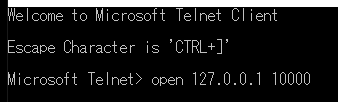
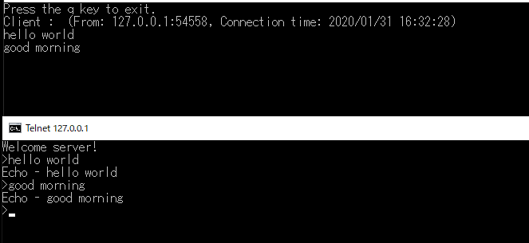
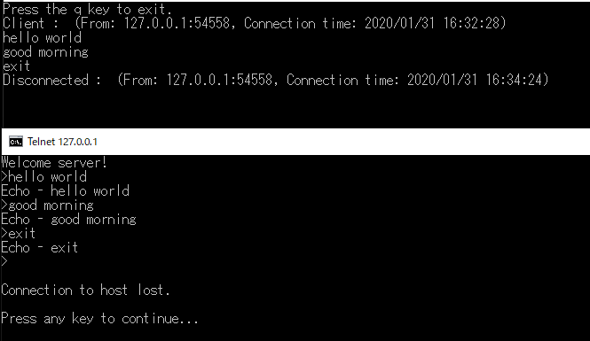
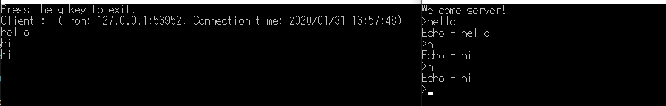

[C#] 非同期ソケット通信(IOCP)-EAPパターン
こんにちは。明月です。
この投稿はC#の非同期ソケット通信(IOCP)-EAPパターンに関する説明です。
以前、同期ソケット通信に関して説明したことがあります。
link - [C#] ソケット(Socket)通信をする方法
普通の同期、非同期の意味はクライアントとサーバーの連結状態が続いていれば同期だし、非同期は連結を続けていることではなくデータを送受信すれば連結を切断することです。
でも、ここで説明する同期と非同期は意味が少し違います。
システム内部でスレッドリソースでソケット通信を保持するかどうかの差です。
つまり、同期ソケット通信ならSocketクラスをサーバーにListenしてClientが接続するたびにスレッドを生成してオブジェクトを保持することです。スレッドのリストはVectorやListで管理して切断する時、オブジェクトを解除することです。
でもこの同期ソケット通信はプログラム実装が簡単ですが、リソース問題があります。システムリソースは限定的なので、スレッドとSocketオブジェクトを無限に生成することができません。
ゲームサーバーだと考えても同時接続200Clientから300Clientだけでもスレッドが200個から300個が生成されることです。最近は、ハードウェアが以前より非常に向上になりましたが、C#の長所であり短所であるGC(ガベージコレクション)があるのでリソース管理がしやすくないでしょう。
C#というのはインスタンスを生成することは可能ですが、メモリ解除はできません。GCが自動に解除してくれますが、リソースをたくさん使っている状況でサーバーがフリージング状態になっても可笑しくないでしょう。
その問題を解決することが非同期ソケットです。非同期ソケットはClientが接続すると接続する時の処理をためのイベントを発生して連結リソースをキュー構造のIOCPに格納します。
その後からClientからメッセージが発生するとIOCPから連結リソースを持ち込んでソケット通信を続けることです。そのことでサーバはThreadを生成する必要がないので、リソースをたくさん節約することができます。
非同期ソケットサーバーはスレッドを管理するスレッドプールを生成する必要がないし、スレッドを管理する必要がないので、その部分はソースが簡単になります。
これが同期ソケット通信と非同期ソケット通信の差です。
非同期ソケットはメモリ効率もいいし、ソースも簡単に作成することができるので、同期ソケット通信パターンはいらないと思いますが、必ずそうではありません。
非同期ソケットサーバーも確かに短所があります。
Clientのアクションでサーバが返事する形、webserverみたいに接続してすぐ切断する仕様は非同期ソケットがよいです。
でもClientからリクエストがなくてもデータをサーバーからクライアントにリアルタイムでデータを送信しなければならない時には同期ソケット通信がよいです。
例えば、ワンフレーム端末タイプか株価チャートみたいに推移プログラムのデータを継続的に受けなければならない形です。
この時にはクライアントのリストから早めにクライアントを取得してデータを送信しなければならないことなので、リストに連結リソースを管理して送信すれば簡単に作成することが可能です。
C＃では、この非同期ソケット通信でTAP(Task-based Asynchronous Pattern）、EAP（Event-based Asynchronous Pattern）、APM（Asynchronous Programming Model）があります。
その中でここにはEAPパターンを説明します。
Windowのtelnetのプログラムを利用してデータを受け取るサーバーを作成しましょう。
using System;
using System.Text;
using System.Net;
using System.Net.Sockets;
// 実行関数は一番下にあります。
namespace AsyncSocketServer
{
// Client EventでSocketAsyncEventArgsを継承する。
class Client : SocketAsyncEventArgs
{
// メッセージは改行で区分する。
private static char CR = (char)0x0D;
private static char LF = (char)0x0A;
private Socket socket;
// メッセージを保管するバッファ
private StringBuilder sb = new StringBuilder();
private IPEndPoint remoteAddr;
// コンストラクタ
public Client(Socket socket)
{
this.socket = socket;
// メモリバッファを初期化する。サイズは1024だ。
base.SetBuffer(new byte[1024], 0, 1024);
base.UserToken = socket;
// メッセージを受け取るとイベントを発生する。(IOCPからリソース取得すること。)
base.Completed += Client_Completed; ;
// メッセージを受け取るとイベントを発生する。(IOCPにリソースを格納すること。)
this.socket.ReceiveAsync(this);
// 接続メッセージ
remoteAddr = (IPEndPoint)socket.RemoteEndPoint;
// コンソール出力
Console.WriteLine($"Client : (From: {remoteAddr.Address.ToString()}:{remoteAddr.Port}, Connection time: {DateTime.Now})");
// メッセージをクライアントに送信
this.Send("Welcome server!\r\n>");
}
// メッセージを受け取ると発生するイベント
private void Client_Completed(object sender, SocketAsyncEventArgs e)
{
// 接続が繋がっていると。。。
if (socket.Connected && base.BytesTransferred > 0)
{
// 受信データはe.Bufferにある。
byte[] data = e.Buffer;
// データをStringタイプに変換
string msg = Encoding.ASCII.GetString(data);
// メモリバッファを初期化する。サイズは1024だ。
base.SetBuffer(new byte[1024], 0, 1024);
// バッファの空白を除く。
sb.Append(msg.Trim('\0'));
// メッセージの末にエスケープ\r\nの形でサーバーに表示する。
if (sb.Length >= 2 && sb[sb.Length - 2] == CR && sb[sb.Length - 1] == LF)
{
// 改行を除く。
sb.Length = sb.Length - 2;
// Stringタイプに変換
msg = sb.ToString();
// コンソールに出力。
Console.WriteLine(msg);
// ClientにEchoメッセージを送信。
Send($"Echo - {msg}\r\n>");
// もし、メッセージがexitなら接続を切断する。
if ("exit".Equals(msg, StringComparison.OrdinalIgnoreCase))
{
// 接続終了メッセージ
Console.WriteLine($"Disconnected : (From: {remoteAddr.Address.ToString()}:{remoteAddr.Port}, Connection time: {DateTime.Now})");
// 接続を切断
socket.DisconnectAsync(this);
return;
}
// バッファをクリア
sb.Clear();
}
// メッセージを受け取るとイベントを発生する。(IOCPにリソースを格納すること。)
this.socket.ReceiveAsync(this);
}
else
{
// 接続が切れちゃった。
Console.WriteLine($"Disconnected : (From: {remoteAddr.Address.ToString()}:{remoteAddr.Port}, Connection time: {DateTime.Now})");
}
}
// Sendも非同期式で作成可能だが、あえてSendはその必要がない。
//private SocketAsyncEventArgs sendArgs = new SocketAsyncEventArgs();
private void Send(String msg)
{
byte[] sendData = Encoding.ASCII.GetBytes(msg);
// 非同期式
//sendArgs.SetBuffer(sendData, 0, sendData.Length);
//socket.SendAsync(sendArgs);
// Clientにメッセージ送信
socket.Send(sendData, sendData.Length, SocketFlags.None);
}
}
// サーバーもEventのSocketAsyncEventArgsを継承
class Server : SocketAsyncEventArgs
{
private Socket socket;
public Server(Socket socket)
{
this.socket = socket;
base.UserToken = socket;
// メッセージを受け取るとイベントを発生する。(IOCPからリソース取得すること。)
base.Completed += Server_Completed; ;
}
// Clientが接続するとイベントを発生する。
private void Server_Completed(object sender, SocketAsyncEventArgs e)
{
// 接続完了すれば、Client Eventを生成してReceiveイベントを生成する。
var client = new Client(e.AcceptSocket);
// サーバーのEventにcilentを除く。
e.AcceptSocket = null;
// ClientからAcceptになるとイベントを発生する。(IOCPにリソースを格納すること。)
this.socket.AcceptAsync(e);
}
}
// メインProgramはSocketを継承してサーバーSocketを使う。
class Program : Socket
{
public Program() : base(AddressFamily.InterNetwork, SocketType.Stream, ProtocolType.Tcp)
{
// ポートは10000をListenする。
base.Bind(new IPEndPoint(IPAddress.Any, 10000));
base.Listen(20);
// 非同期ソケットでServerインスタンスを生成する。(IOCPにリソースを格納すること。)
base.AcceptAsync(new Server(this));
}
// 実行関数
static void Main(string[] args)
{
// Programクラスを実行する。
new Program();
// qキーを押せばサーバは終了になる。
Console.WriteLine("Press the q key to exit.");
while (true)
{
string k = Console.ReadLine();
if ("q".Equals(k, StringComparison.OrdinalIgnoreCase))
{
break;
}
}
}
}
}
作成が終わったらサーバーを起動してtelnetプログラムで接続します。

IPはローカル(127.0.0.1)に設定してポートは10000です。

telnetからメッセージを送信したらサーバー側でメッセージをちゃんと受け取ってコンソールに表示します。
telnet側にはechoメッセージがちゃんと表示します。

終了まで綺麗に送受信ができます。
サーバーは作成できましたからこれからクライアントを作成します。
クライアントプログラムでもListen、AcceptとConnectの差だけです。
using System;
using System.Text;
using System.Net;
using System.Net.Sockets;
namespace AsyncSocketClient
{
// Client EventでSocketAsyncEventArgsを継承する。
class Client : SocketAsyncEventArgs
{
// メッセージは改行で区分する。
private static char CR = (char)0x0D;
private static char LF = (char)0x0A;
private Socket socket;
// メッセージを保管するバッファ
private StringBuilder sb = new StringBuilder();
public Client(EndPoint pep)
{
RemoteEndPoint = pep;
// メッセージを受け取るとイベントを発生する。(IOCPからリソース取得すること。)
base.Completed += Connected_Completed;
}
private void Connected_Completed(object sender, SocketAsyncEventArgs e)
{
// 接続イベントは解除する。
base.Completed -= Connected_Completed;
// 接続ソケット設定
this.socket = e.ConnectSocket;
base.UserToken = this.socket;
// バッファを設定する。
base.SetBuffer(new byte[1024], 0, 1024);
// 受信イベントを登録する。
base.Completed += Client_Completed;
// メッセージを受け取るとイベントを発生する。(IOCPにリソースを格納すること。)
this.socket.ReceiveAsync(this);
}
// メッセージを受け取ると発生するイベント
private void Client_Completed(object sender, SocketAsyncEventArgs e)
{
// 接続が繋がっていると。。。
if (socket.Connected && base.BytesTransferred > 0)
{
// 受信データはe.Bufferにある。
byte[] data = e.Buffer;
// データをStringタイプに変換
string msg = Encoding.ASCII.GetString(data);
// メモリバッファを初期化する。サイズは1024だ。
base.SetBuffer(new byte[1024], 0, 1024);
// バッファの空白を除く。
sb.Append(msg.Trim('\0'));
// メッセージの末にエスケープ\r\nと>の形でコンソールに表示する。
if (sb.Length >= 3 && sb[sb.Length - 3] == CR && sb[sb.Length - 2] == LF && sb[sb.Length - 1] == '>')
{
msg = sb.ToString();
// コンソールに出力する。
Console.Write(msg);
// バッファをクリア
sb.Clear();
}
// メッセージを受け取るとイベントを発生する。(IOCPにリソースを格納すること。)
this.socket.ReceiveAsync(this);
}
else
{
// 接続が切れちゃった。
var remoteAddr = (IPEndPoint)socket.RemoteEndPoint;
Console.WriteLine($"Disconnected : (From: {remoteAddr.Address.ToString()}:{remoteAddr.Port}, Connection time: {DateTime.Now})");
}
}
// Sendも非同期式で作成可能だが、あえてSendはその必要がない。
// private SocketAsyncEventArgs sendArgs = new SocketAsyncEventArgs();
public void Send(String msg)
{
byte[] sendData = Encoding.ASCII.GetBytes(msg);
// 非同期式
//sendArgs.SetBuffer(sendData, 0, sendData.Length);
//socket.SendAsync(sendArgs);
// Clientにメッセージ送信
socket.Send(sendData, sendDaa.Length, SocketFlags.None);
}
}
// メインProgramはSocketを継承してクライアントSocketに使う
class Program : Socket
{
public Program() : base(AddressFamily.InterNetwork, SocketType.Stream, ProtocolType.Tcp)
{
// 接続Eventを生成する。
var client = new Client(new IPEndPoint(IPAddress.Parse("127.0.0.1"), 10000));
// サーバーに接続する。
base.ConnectAsync(client);
while (true)
{
// コンソールからメッセージを受け取ったらサーバーにメッセージを送信する。
string k = Console.ReadLine();
// メッセージ送信
client.Send(k + "\r\n");
// exitなら終了する。
if ("exit".Equals(k, StringComparison.OrdinalIgnoreCase))
{
break;
}
}
}
// 実行関数
static void Main(string[] args)
{
new Program();
}
}
}
サーバーを起動してクライアントで接続しましょう。

上のtelnetで接続したことと同じ結果になりました。
ここまでC#の非同期ソケット通信(IOCP)-EAPパターンに関する説明でした。
ご不明なところや間違いところがあればコメントしてください。
- [C#] 非同期ソケット通信(IOCP)-APMパターン2020/05/18 18:45:37
- [C#] 非同期ソケット通信(IOCP)-EAPパターン2020/05/15 19:31:02
- [C#] NPOIを利用してExcelを読み込んで出力する方法2020/05/08 10:43:52
- [C#] NPOIライブラリを利用してエクセルファイルを生成する方法2020/05/07 01:49:01
- [C#] Geckoライブラリを利用してウェブスクレイピングする方法2020/05/05 00:52:26
- [C#] PDFを作成する方法(iTextSharp)2020/05/03 10:22:40
- [C#] シリアライズ(Serialization)をする方法2020/04/30 19:32:04
- [C#] dynamicタイプの動的パラメータ-DynamicObject(WinFormでASP.MVCのViewBagオブジェクトを使用する方法)2020/04/29 22:41:32
- [C#] Stringの補間式(interpolation)2020/04/27 20:39:57
- [C#] Newtonsoft.JSONライブラリを利用してJsonデータ構造を扱う方法2020/04/23 20:19:53
- [C#] EMailを送信する方法(System.Net.Mail)2020/04/22 19:00:42
- [C#] ini環境ファイルを使う方法2020/04/22 00:09:39
- [C#] 環境設定ファイルを扱う方法(System.Configuration)2020/04/20 19:37:57
- [C#] Reflectionを利用してクラス複製する方法2020/04/17 00:34:33
- [C#] XMLをXPathを利用してデータを取得する方法2020/04/16 00:47:17
- [Python] 17. スレッド(Thread)とロック(lock)、そしてデッドロック(deadlock)2020/06/18 00:19:45
- [Python] 16. IO(ファイル読み取り、書き込み)を扱う方法2020/06/16 18:37:00
- [Python] 15. クラスを継承する方法2020/06/15 18:20:07
- [Python] 14. クラスプロパティ(Property)2020/06/12 17:45:13
- [Python] 13. クラス関数(class method)とダック・タイピング、そして特殊メソッド2020/06/11 19:42:29
- [Python] 12. クラス(Class)を使う方法2020/06/10 19:33:33
- [Python] 11. デコレーター（Decorator）を使う方法2020/06/09 17:27:18
- [Python] 10. モジュールとパッケージ(import)2020/06/08 19:07:50
- [Python] 09. 例外処理する方法2020/06/05 17:11:47
- [Python] 08. ジェネレータ(Generator)2020/06/04 18:46:08
- [Python] 07. globalとnonlocal2020/06/03 20:34:49
- [Python] 06. 関数(function) - インライン関数、callbak、ラムダ(lambda)そしてクロージャ2020/06/02 20:51:22
- [Python] 05. コンプリヘンション(Comprehension)を使用する方法2020/06/01 19:38:58
- [Python] 04. 制御文(if, while, for, break, continue)とインデント2020/05/29 21:09:08
- [Python] 03. Pythonでリスト(list)とタプル(tuple)、そしてディクショナリ(dictionary)、セット(set)2020/05/27 18:49:08